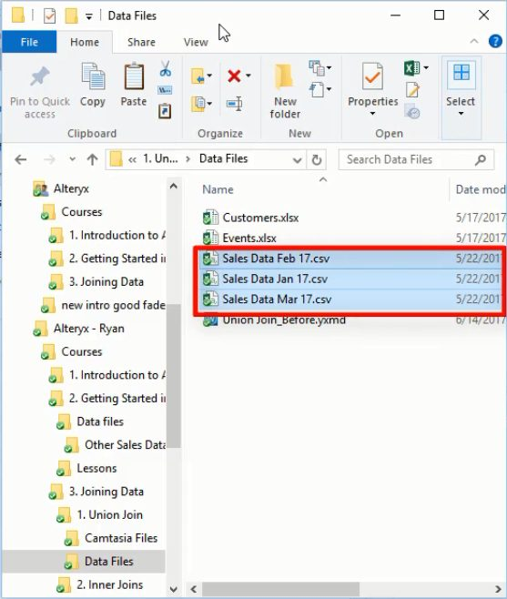
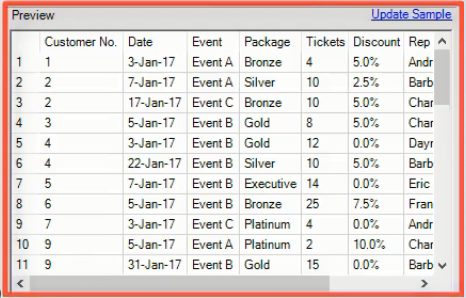
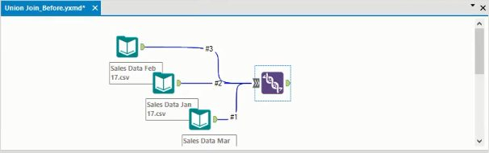
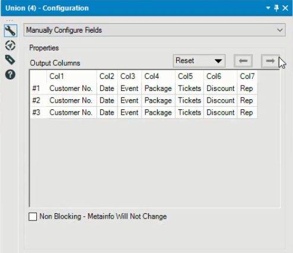
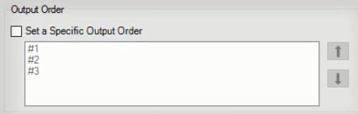
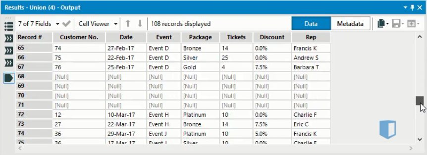

One of the most common activities in Alteryx is combining datasets together. In the business world, the data you want to analyse usually comes from more than one source, and you’ll want to combine them to find the insights you need.
But Alteryx provides a lot of different joint types, and it can be hard to know which one to use. In this post, we’ll look at the Union Join, a fairly simple join type that lets you vertically combine files with similar structures.
What is a union join?
The Union join combines multiple data files vertically by adding rows to your data. It is used when you have multiple different tables containing the same fields, or columns, and you want to combine the records from multiple tables into a single one. The combined dataset contains the same number of columns as each of the input data sets, but contains more rows.
Combining data with a union join creates a single, longer dataset. In effect, you take one data set, and append the contents of the other data sets to create a single long, continuous data set.
To understand this, we’ll consider an example. Say we have a company that records sales figures on a monthly basis. The sales figures for each month are stored in a separate file, as we can see below.

We would like to combine the sales figures for January, February and March into a single file so we can easily view overall sales figures.
Importantly, each of the three files has an identical layout, meaning each file has the same set of column names. Below is a preview of the January file after we import it into Alteryx. The February and March files have the same column layout.

When the column names are identical, a union join is the ideal tool to use.
The union join tool is found on the join tab. When we add it to the canvas and connect our data sets to it, the canvas looks like this.

Notice the double chevrons on the input node of the union tool. This indicates that we can connect multiple inputs to the union tool. Notice also that each connection to the union tool is numbered. These numbers are assigned in the order the connection were made. So here we connected March data first, then January, and finally February.
At this point we can run the workflow to combine the data sets, but first we’ll look at some of the settings you can configure when using the Union join.
Configuring the union join
When we add the Union tool, we have the option to configure the union automatically, either by position or column name, or to manually configure the fields. Choosing to configure manually will open a window like this.

This tells us for instance, that column 1 of the output will contain the Customer Numbers from each of the three input files. If the columns are ordered differently in the input files, manually configuring the output can ensure that the right data is in each column of the output.
If all the input files contain the same columns, as is the case here, then there is no need for manual configuration, and you can choose one of the automatic options.
Also in the configuration window, we can adjust the order in which the output is ordered, using the window shown below

Remember these numbers were assigned previously when we connected the input files to the union tool. If you prefer, you can select “Set a Specific Output Order”, and you will be able to rearrange the input files in whatever order you like.
Now when we run the workflow we get a single long data set that combines the sales data from each of our three individual files. The column layout is identical to the input files, with the data for each month stacked vertically on top of each other.

Conclusion
In Alteryx, the Union tool is the best join option when you want to combine multiple data files which have the same layout into a single file. It combines multiple input files vertically, creating an output file that is the same width as each input file, but of a greater length than any of them.